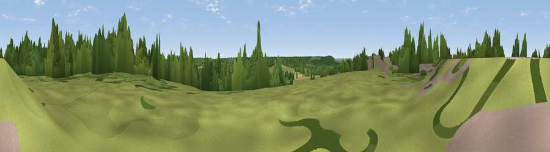

Clapham Hill
#29915 in England · top 49% of its area beats it · near SeasalterThe view, rendered

A 360° render of this exact spot computed from the terrain model, tree cover and land cover — summer colours, afternoon light, calibrated against photographs of famous viewpoints. Real trees, hedges and buildings will differ in detail.
The panorama
Grey silhouette: terrain skyline in each direction (720 bearings, Earth curvature and refraction included). Dashed green: skyline with trees (+15 m) and buildings (+8 m) as obstacles. Blue strip: how far the ground is visible on each bearing.
Where the view opens
Wedge length = distance to the farthest visible ground on that bearing (vegetation-aware). Rings at 10, 25 and 50 km.
What fills the view
35% woodland · 31% grassland · 15% cropland · 14% water · 5% built-up
Angular shares of the visible panorama (visual magnitude), not map area. Landscape diversity 0.63 (0–1 Shannon).
Key numbers
More beautiful places nearby
The staircase of upgrades: each row has a higher view potential than everything closer. Driving times are estimates from straight-line distance, calibrated against real road routing — check an actual route before setting out.
| Place | Direction | Drive | Score |
|---|---|---|---|
| Viewpoint near Yorkletts | WSW · 1 km | ~2 min | 60.9 |
| The Mount (Popsy's View) | SW · 11 km | ~21 min | 61.7 |
| Viewpoint near Boughton Aluph | SSW · 17 km | ~30 min | 66.7 |
| Viewpoint near Wye | SSW · 18 km | ~31 min | 70.9 |
| Viewpoint near Westwell | SW · 20 km | ~33 min | 72.2 |
| Tolsford Hill | S · 26 km | ~42 min | 77.9 |
| Viewpoint near Capel-le-Ferne | SSE · 30 km | ~46 min | 80.2 |
| Viewpoint near Willingdon | SW · 81 km | ~105 min | 83.4 |
51.33658, 1.01551 · source: dobih hill · position refined by local search. Computed location — check access rights before visiting.